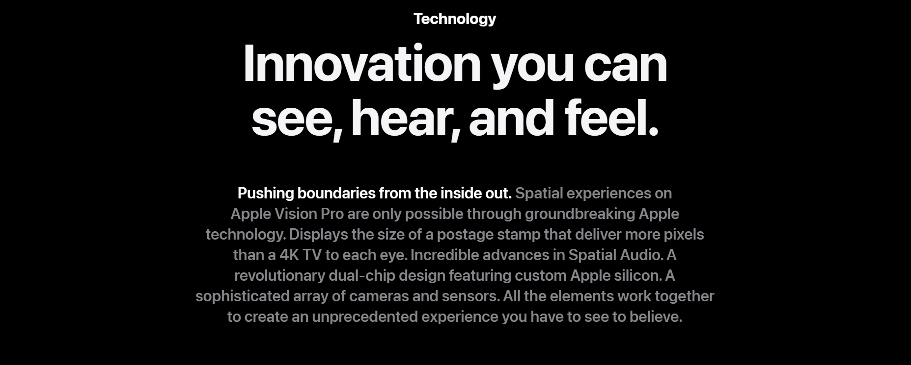

INTRODUCTION
Welcome to the era of spatial computing.
Apple Vision Pro seamlessly blends
digital content with your physical space.

Watch the film
Watch the Guided Tour

Free your Desktop
Your apps live in
your space.
With Apple Vision Pro, you have an infinite canvas that transforms how you use the apps you love. Arrange apps anywhere and scale them to the perfect size, making the workspace of your dreams a reality — all while staying present in the world around you. Browse the web in Safari, create a to‑do list in Notes, chat in Messages, and seamlessly move between them with a glance. You can even bring your Mac workflows into Apple Vision Pro wirelessly with Mac Virtual Display.
Design
Designed by Apple.
Apple Vision Pro is the result of decades of experience designing high‑performance, mobile, and wearable devices — culminating in the most ambitious product Apple has ever created. Apple Vision Pro integrates incredibly advanced technology into an elegant, compact form, resulting in an amazing experience every time you put it on.
Make meetings more
meaningful.
Apple Vision Pro makes it easy to collaborate and connect wherever you are. FaceTime video tiles are life‑size, and as new people join, the call simply expands in your room. Or choose to use your spatial Persona and feel like you are sharing the same space with others. And in FaceTime, you can use apps to collaborate with colleagues on documents simultaneously.
Front.A singular piece of three-dimensionally formed laminated glass flows into an aluminum alloy frame that curves to wrap around your face.
Light Seal.The Light Seal gently flexes to conform to your face, delivering a precise fit while blocking out stray light.
Head bands. The Solo Knit Band provides cushioning, breathability, and stretch, and a Fit Dial lets you adjust Apple Vision Pro precisely to your head. The Dual Loop Band offers an additional option for a personalized fit.
Power.The external battery supports up to 2 hours of general use and up to 2.5 hours of video playback.1
Sound.Speakers positioned close to your ears deliver rich Spatial Audio while keeping you aware of your surroundings.
EyeSight. An outward display reveals your eyes while wearing Apple Vision Pro, letting others know when you are using apps or fully immersed.


visionOS
Apple’s first spatial
operating system.
Interaction designed for
spatial computing.
Built on the foundation of macOS, iOS, and iPadOS, visionOS enables powerful spatial experiences. Control Apple Vision Pro with your eyes, hands, and voice — interactions feel intuitive and magical. Simply look at an element, tap your fingers together to select, and use the virtual keyboard or dictation to type.

More pixels than a 4K TV. For each eye.
The custom micro‑OLED display system features 23 million pixels, delivering stunning resolution and colors. And a specially designed three‑element lens creates the feeling of a display that’s everywhere you look.
Our most advanced
Spatial Audio system ever.
Dual-driver audio pods positioned next to each ear deliver personalized sound while letting you hear what’s around you. Spatial Audio makes sounds feel like they’re coming from your surroundings. Audio ray tracing analyzes your room’s acoustic properties to adapt and match sound to your space. And if you want to use headphones with Apple Vision Pro, AirPods Pro (2nd generation) with USB‑C offer the perfect experience, featuring Lossless Audio with ultra-low latency enabled by the H2 chip in both devices.
Responsive, precision eye tracking.
A high‑performance eye‑tracking system of LEDs and infrared cameras projects invisible light patterns onto each eye. This advanced system provides ultraprecise input without your needing to hold any controllers, so you can accurately select elements just by looking at them.

A sophisticated sensor array.
A pair of high-resolution cameras transmit over one billion pixels per second to the displays so you can see the world around you clearly. The system also helps deliver precise head and hand tracking and real‑time 3D mapping, all while understanding your hand gestures from a wide range of positions.

Revolutionary dual‑chip
performance.
A unique dual‑chip design enables the spatial experiences on Apple Vision Pro. The powerful M2 chip simultaneously runs visionOS, executes advanced computer vision algorithms, and delivers stunning graphics, all with incredible efficiency. And the brand-new R1 chip is specifically dedicated to process input from the cameras, sensors, and microphones, streaming images to the displays within 12 milliseconds — for a virtually lag-free, real-time view of the world.